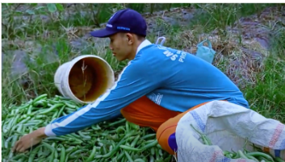
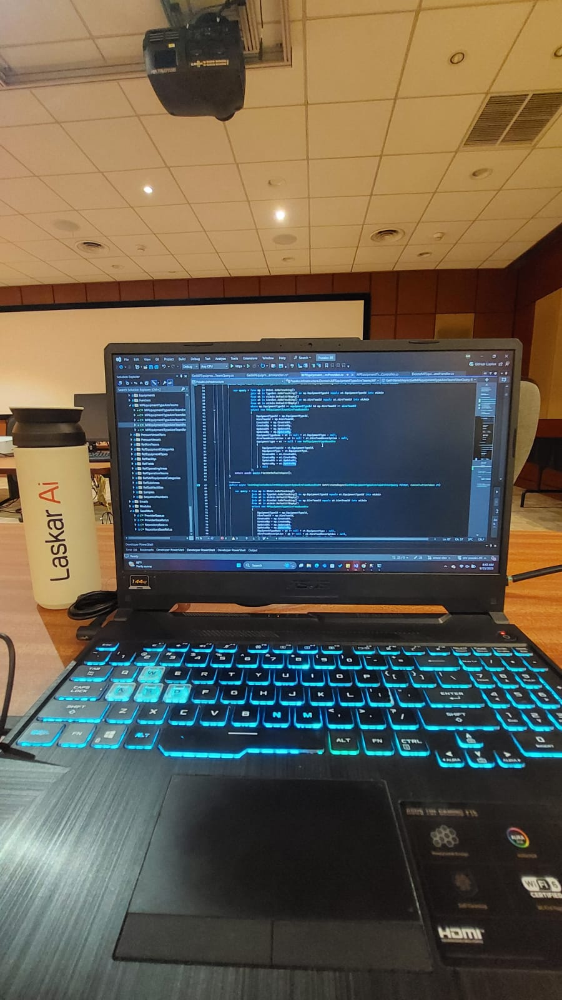
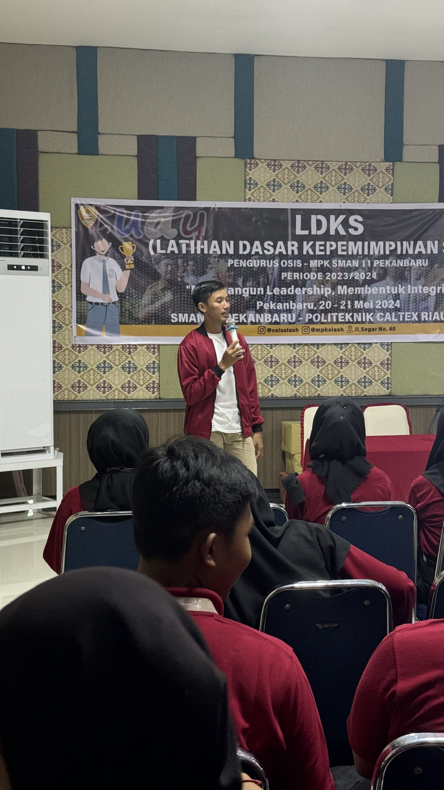
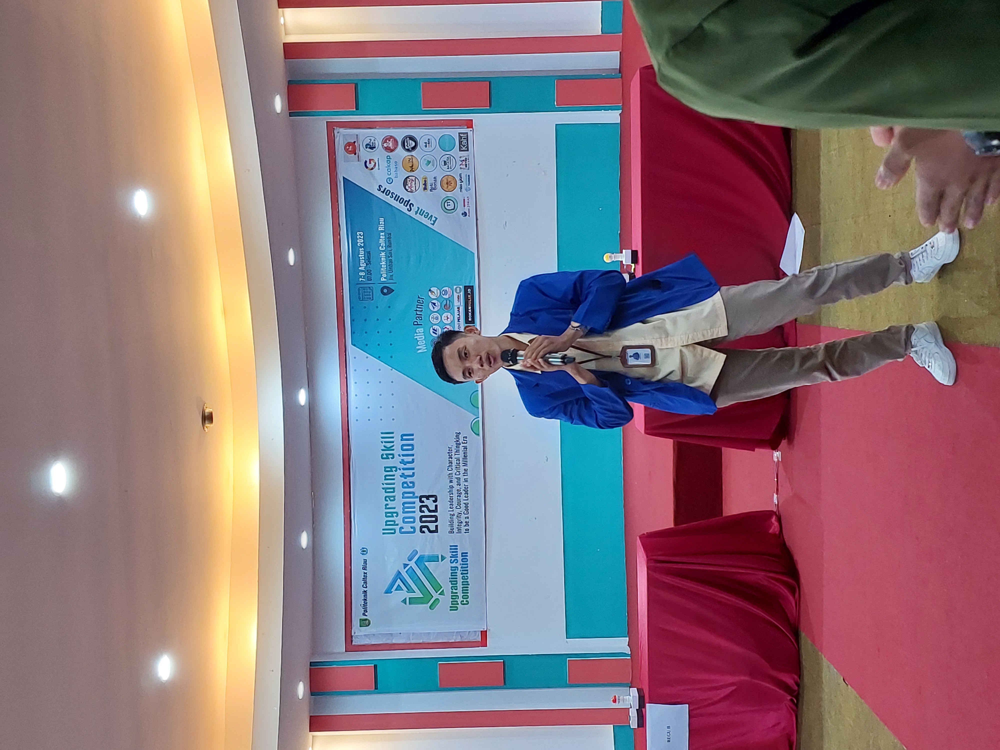

MHD. Anwar - Fullstack Developer
Pertamina Digital Hub
Dari Ladang ke Kode: Bukti Nyata Growth Mindset

BEFORE
Humble Beginning
Bekerja di ladang dengan mimpi besar

PROCESS
Learning Phase
Konsisten belajar coding & teknologi

PROCESS
Skill Building
Mengikuti workshop & sertifikasi

PROCESS
Leadership
Memimpin & membimbing orang lain

GROWTH
Knowledge Sharing
Berbagi ilmu melalui presentasi
NOW
Professional Achievement
Fullstack Developer
Pertamina Digital Hub